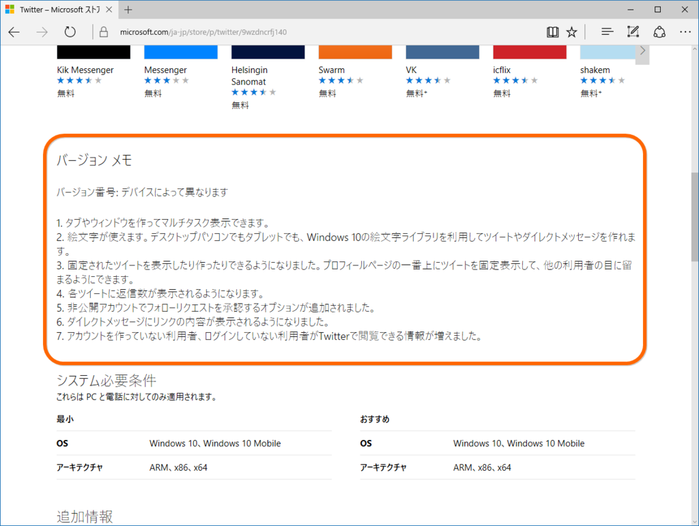

PowerShell：Windows ストアのアプリの更新履歴をチェックする
公開日：

これをチェックするツールがほしかったんだけど、WPF や ASP.NET Web Pages ではストアに「おまえ BOT だろ」と怒られてうまくいかなかった。けれど、似たようなコードを PowerShell で試すと、なぜかうまくいく……。原因はわかんないけど（調べる気が起きない）、PowerShell でできるんなら、PowerShell でやるか―って感じで頑張ってみた。
基本方針は
- ストアから #version-notes をスクレイピングして保存
- 新旧 #version-notes を比較してステータス（!?*+-）をつける
- 結果を PSCustomｍObject の配列で返す
って感じ。
function Check-WindowsStore
{
$urls =@(
"https://www.microsoft.com/ja-jp/store/p/swarm/9wzdncrdrsq1",
:（途中省略）
)
重複は無駄なので削る
$urls = $urls | Get-Unique
foreach ($url in $urls)
{
try
{
ストアからテキストをダウンロード
$request = Invoke-WebRequest -Uri $url
アプリの表示名を記憶
$title = $request.AllElements
.FindById("page-title").innerText
新しいバージョンノートを記憶
$new = $request.AllElements
.FindById("version-notes").innerText
if ($new)
{
最初だけ：更新履歴を保存する .temp フォルダーを掘る
$path = $env:USERPROFILE
| Join-Path -ChildPath ".temp"
if (Test-Path $path) { }
else { New-Item $path -ItemType Directory }
バージョンノートを保存するファイル名を記憶
（パスに使えない文字は排除しておく）
$path = $path | Join-Path -ChildPath
($title -replace "/", " " -replace ":", " ")
$old_path = $path + ".old.txt" # 質素な差分管理
$new_path = $path + ".txt"
前の更新履歴が保存されていたら……
if (Test-Path $new_path)
{
名前を変えて保存
$old = [System.IO.File]::ReadAllText($new_path)
if ($old -eq $new)
{
$status = "-" # 変化なし
}
else
{
[System.IO.File]::
WriteAllText($old_path, $old)
[System.IO.File]::
WriteAllText($new_path, $new)
$status = "*" # 変化あり
}
}
else # 新しい更新履歴
{
[System.IO.File]::WriteAllText($new_path, $new)
$status = "+" # 新規作成
}
}
else # $new が nil
{
$status = "?" # そもそもリリースノートがない
}
[PSCustomObject] @{
Status = $status; Title = $title; Url=$url
}
}
catch [Exception]
{
$status = "!" # エラー
[PSCustomObject] @{
Status = $status; Title = $title; Url=$url
}
}
finally
{
Write-Host "$status $url"
$request = $null
}
}
Write-Host "Complete"
}
この前は Slack のバージョン履歴が更新されたので、
Check-WindowsStore
| where { $_.Status -ne "?" }
| where { $_.Status -ne "-" }
| Format-Tableを実行すると、
Status Title Url ------ ----- --- * Slack https://www.microsoft.com/ja-jp/store/p/……
が出力される。
個人的お勉強ポイント
PowerShell はいろいろ省略記法とかあって、カッコよく書くのはまだまだ難しいなって思った。ぼちぼちうまくなりたい。
エスケープは ` で（今回は結局使わなかったけど）
タブは `t で入力できる。改行は `n だけど、CRLF にしたかったら `r`n にする。
ループでオブジェクトをポイポイすれば yield return みたいになる
$result = @()
に結果をストアしていかなくてもいいみたい。なーんだ！
JoinPath は | で繋ぐとネストが避けられて美しい
Invoke-WebRequest はすっげえ便利
特定の id の中身がほしい場合はこれだけ。
$request = Invoke-WebRequest $url
$request.AllElements.FindById("page-title").innerTextリンクや画像だけをストアしてるメンバーもある！
XPath 使えたらもっと便利なのになぁ（涎